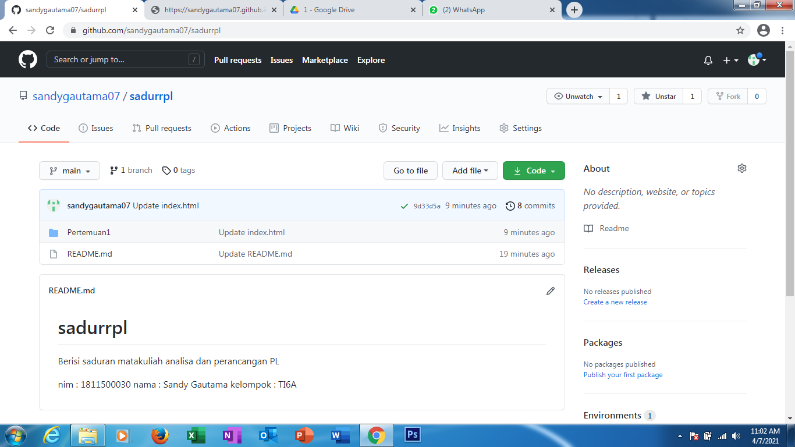

nim : 1811500030
nama : Sandy Gautama
kelompok : TI6A
Hasil saya Menyadur hari ini :
1) Belajar berkomunikasi dengan baik
2) berpikir cerdas dan berjiwa luhur
3) kegiatan perkuliahan menggunakan Classroom,Youtube,dan Telegram
4) tugas menyadur setiap hari dan taruh di github
5) buat kelompok presentasi untuk uas yang berjumlah 3 orang
6) Preview bahan ajar dan RPS ada di web mahasiswa
7) Tujuan perkuliahan matakuliah Analisis dan Perancangan RPL untuk persiapan menghadapi KP
8) Aplikasi Sofware yang nanti digunakan adalah (Astah Community 6)
